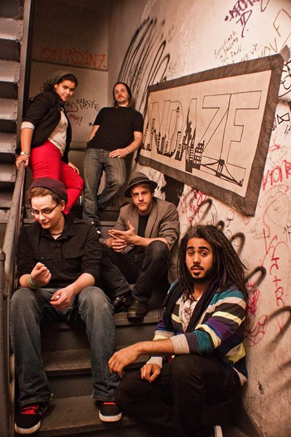
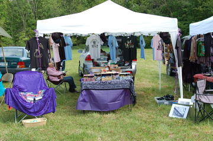
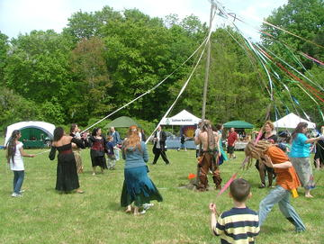

A preview of this years Festival!
Beltane/Spring Festival!
bernadette@bridscloset.com
(845)458-8726
Open Mon-Sat. 11am-7pm
296 Main Street
Cornwall NY 12518

home
|
||
IMPORTANT NOTE Beltane Tickets Please-if you are purchasing your tickets using Paypal, print up your receipt! This will be your ticket! $20 per person/under 12 free!
The flyer for 2012
2011 flyer!
WorkshopDescriptions:
Bill Diamond
Lilith Dorsey .
Oseanna December: Courtney Weber: Tina Vesley:
Lynn Martin The Lenormand Revolution has arrived! Jean Setarah aka "the love witch" will be teaching an introduction to the Lenormand system of cartomancy.
|
7 th annual Beltane/Spring Festival sponsored by Brid's Closet at Palaia Vineyards |
|
|
Please print your receipt-it's your ticket/proof of purchase!
845-458-8726 Event Details Brid's Closet 7th annual Beltane/Spring Festival Sat. May 3rd, 2014 - 9.00 am til 6pm? Admission: $20/under 12 free Come and celebrate spring with us! Dress in your renaissance. faire best! (fantasy, pirate, renaissance, fun) Tarot readers, Dance the Maypole, Live entertainment, games of chance, classes, music, belly dancing, tons of shopping and food from our fine vendors, and so much more!! Where: Palaia Vineyards Directions:http://www.palaiavineyards.com/directions.html Sponsored by Bernadette Montana of Brid's Closet www.bridscloset.com (845) 458-8726 Interested in vending or performing, call me at (845) 458-8726 This year's performers & vendors! Bill Diamond Productions
Raven and Stephanie Grimassi
Courtney Weber
Lilith Dorsey
Oseaana December
Lynn Martin (Hawklynn)
Chandra Concepcion
Tina Vesley
Deidra Catero
David C. Snowdeal
Jean Setarah
MUSIC BY SisterMonk
___________________________ InDaze  Michael Forsyth - Bass/Vox, Jelm - Drums/Air Synth/Percussion/Backing Vox Sounds Like: The Skints, Bob Marley, Sublime, SOJA, PASSAFIRE Bio: InDaze is a New York City based Reggae/Rock band whose vibe is equal parts cool & versatility. Fusing different styles into a solid groove, they provide fans with an energetic and unique “InDaze” experience. So “Hold up your glasses, drink deeply and sweet!” Our Sponsors! http://www.upstateblacknblue.com/ http://www.palaiavineyards.com/
|
||

.jpg)


.jpg)


.jpg)


ONE OF OUR MANY VENDORS FROM PAST EVENTs!


OUR MAYPOLE
Handmade Drums by Primal Percussions accessories and drums
They will be teaching an intro to drumming at the faire! Bring your own drums or you may try out of of their drums to drum on!
https://www.facebook.com/pages/PRIMAL-PERCUSSIONS-ACCESSORIES-AND-DRUMS/141961945839009


A video of last years Beltane festival!
)
This year's Brochure 2014


Last Years Brochure 2013!


Last year brochure 2012

Some of our wonderful vendors!
Palaia vineyards-Their own brand of Wine & Mead
2 Black Cats-Spa treatments/candles
The Gossamer Goddess-wearable art
The Tipsy Turtle Henna Kayos Body art-Face & body paint/body jewelry
Notions-n-Potions-statues,oils
Alice English-jewelry
Primal Percussions
Horned Stone
Weathered Rock Studio
Silver Willow Leather
The Elizabeth Collection
Passion parties-adult and spa products
Crystals and Stuff
Great Sooth-rune readings
Bats in the Belfry
The Griffon's Claw
Lauren Oullette Tarot Readings
Lou Pizz0-cystals-handmade cards-stones
Spiritual Journeys-tarot readings
Eye of Newt BBQ
The Fairy Apothacary
Skandihooligan Designs
Something for Everyone
Roisin Designs
Stag and Crow Designs
The Coven of Haxon Sagan
The Cystal & Stone Experience
A touch of Glass and... Handmade
Elisabeth Farone-Photography/jewelry
Robin McGuiness-handmade jewelry
Free Spirit Creations
Inspirations of Isis
Chuck Finfrock-cystals-readings
Spiritual awakenings
Wendy Forte-handmade jewelry
Bats in the Belfry 45
Iris rainbow things
Spiritual awakenings
Backwoods Woodworks
Luna Grown Jam
Handmade by Barbra
Notions-n-Potions
www.tarotoftheboroughs.com